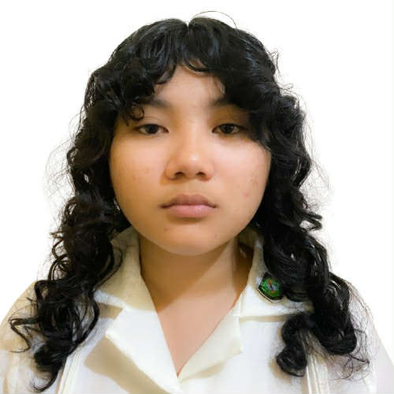

|
 |
|
| Name: Angelica Enano Fuga | |
| Student Number: 251101010 | |
| Course: Bachelor of Science in Computer Science | |
| Section: BSCS-1B | |
| I am a first-year college student with an interest in technology and problem-solving. I am passionate about learning, creating, and exploring new ideas, and I continuously seek opportunities to expand my knowledge and skills. Beyond academics, I enjoy playing string instruments, which strengthens my creativity and discipline, as well as watching movies and reading poetry to broaden my perspective and imagination. I am motivated, curious, and eager to grow both personally and professionally. | |